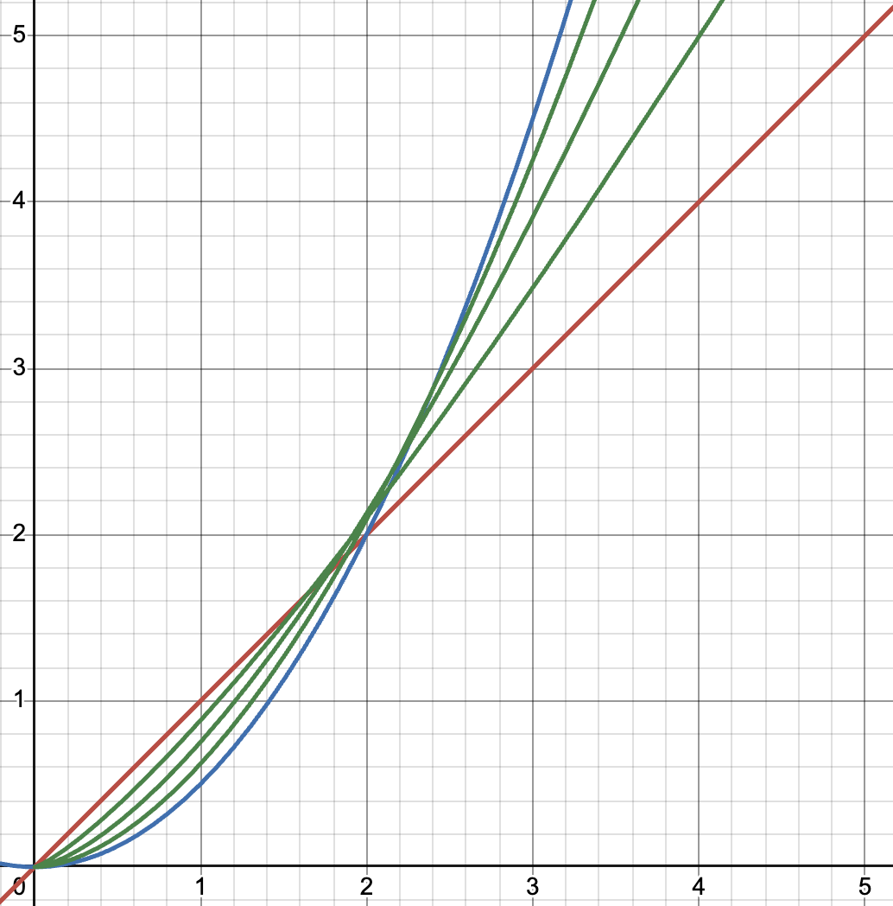

Previous: Theory 9 to Endgame
Disclaimer: This is a simplified version of the guide. The guide will skip over things, and is not completely optimal. Click here for a more polished, in-depth, and optimal guide.
When discussion strategy, this section may use more jargon then the rest of the guide. If you are confused, please check out the discord server and ask.
WARNING: THIS CUSTOM THEORY IS QUITE NEW. STRATEGIES MAY BE INCORRECT AND EVERYTHING IS SUBJECT TO CHANGE. DO NOT TAKE WITH HIGH CONFIDENCE
FI is based on the idea of a fractional integral. For example, half integrating a function twice is the same as regular integrating it once
The actual definition of a fractional integral is complicated but unimportant. The idea that is that it is a smooth way to interpolate from a function (it's 0th integral) to its integral (or 1st integral). For example, the 0.01th integral of a function is very similar to the unchanged function, and the 0.99th integral is very similar to it's regular integral
red: x, blue: \(\int xdx\), green: \(_{\lambda}\int xdx\) for \(\lambda = [0.25, 0.5, 0.75]\)
A good explanation of the fraction integral can be found on this youtube video
Typically, a fractional integral is notated using this notation: \(_{\lambda}\int f(x)dx\), where \(\lambda\) is the fraction.
For example, \(_{\frac{1}{2}}\int f(x) dx\) is the half integral of f(x)
$$\dot{\rho} = tr\sqrt[\pi]{q/\pi} \rightarrow \dot{\rho} = trmn\sqrt[\pi]{\int_0^{q/\pi}g(x)dx}$$
$$\dot{r} = (\int_0^{\pi}g(x)dx - _{\lambda}\int_0^{\pi}g(x)dx)^{-1}$$
$$\dot{q} = q_1q_2$$
| Milestone 0 | $$1 - \frac{x^2}{2!} + \frac{x^4}{4!}$$ |
| Milestone 1 | $$1 - \frac{x^3}{3!} + \frac{x^5}{5!}$$ |
| Milestone 2 | $$\frac{x + \frac{x^2}{2} + \frac{x^3}{3} + \frac{x^4}{4} + \frac{x^5}{5}}{ln(10)}$$ |
| Milestone 3 | $$1 + x + \frac{x^2}{2!} + \frac{x^3}{3!} + \frac{x^4}{4!} + \frac{x^5}{5!}$$ |
| Before K term | $$\frac{1}{2}$$ |
| Milestone 0 | $$\sum_{i=0}^{K}\frac{1}{2^i}$$ |
| Milestone 1 | $$\sum_{i=0}^{K}\frac{2}{3^i}$$ |
| Milestone 2 | $$\sum_{i=0}^{K}\frac{3}{4^i}$$ |
This main equation shows that \(\dot{\rho}\) is proportional to t, r, and \(\sqrt[\pi]q\)
After the main equation changes it is proportional to t, r, m, n, and \(\sqrt[\pi]{(\int g)(q/\pi)}\)
Now, g is always a polynomial, so to approximate the integral g(x) we can take the highest exponent in the polynomial and increase it by one to make a new, very simple polynomial. This of course, is not a very good approximation, it ignores coefficients, but the exponent is the thing tha matters here. For example, the integral of the Milestone 0 equation can be thought of as \(x^5\), so after milestone 0, rho is proportional to \(\sqrt[\pi]{q^5}\) or \(q^{5/\pi} \approx q^{1.59}\) ignoring coefficients
The fact that this exponent is higher then one, means tht q's affect on \(\dot{\rho}\) is greater then other variables
The 2nd line is the equation for \(\dot{r}\). This equation shows that \(\dot{r}\) is proportional to how close the 2 integrals are.
One integral is a normal integral, but the other is a fractional integral. As shown before, as the fraction approaches 1, the two integrals get closer together. Thus, as \(\lambda\) approaches one, the fractional integral approaches the normal integral, and \(\dot{r}\) increases
The \(\lambda\) equations are all equations that converge to 1. The first equation adds 1/2 then 1/4 then 1/8. Each successive addition moves half the remaining distance to 1, and slowly converges on it. The next equations do the same time, but instead of half the distance it's 2/3 or 3/4
And thus, we can determine the strengths of each variable
| \(\dot{t}\) | Increases \(\dot{t}\) by 0.25 each level, max 1 |
| \(q_1\) | Increases \(\dot{q}\) by approx. 18% (50x every 23 levels) |
| \(q_2\) | Increases \(\dot{q}\) by 2x |
| \(K\) | Increases \(\dot{r}\) by 2x, 3x, or 4x depending on milestones |
| \(m\) | Increases \(\dot{\rho}\) by 1.5x |
| \(m\) | Increases \(\dot{\rho}\) by approx 10% (3x every 11 levels) |
The theory is very new, so the strategies are not fully developed. These strategies are unoptimised and subject to change
FI, having many time dependant variables, is a relatively idle theory, so autobuy all isn't too bad. FI, whilst having some of thw most complicated equations, really just has d strats and some basic MS (I say basic MS it's still kinda hard).
Like many other theories, FI has a milestone swapping strat. The \(q_1\) exp milestones increase q gain, and the m and n variable milestones increase \(\dot{\rho}\). The way milestone swapping works is that every so often you swap to \(q_1\) exp to build up q, and then swap to m and n variables to actually grow \(\rho\). The reason this works is that the benefit of having \(q_1\) milestones (i.e. high q) remain even after you swap out of them
To perform MS you want to swap between the normal milestone route given about, and prioritising the \(q_1\) exponent milestone. The best way to describe it is that when your swapping your milestones, max out \(q_1\) exponent, then put you remaining milestones in the normal route. However, ALWAYS prioritise perma level locked upgrades over other upgrades. The buy order is \(q_1\) exp → perma level locked milestones → other milestones. Of course, if the milestone resets q, i.e. the g(x) milestone, don't respec it, just keep it bought
FI is heavily effected by stepwise variables. The variable \(q_1\) has a step length of 21, meaning upgrade 21-22, 42-43 etc. are much stronger. The variable n has a step length of 11
| \(q_1\) | Buy at \(\frac{1}{10}\) of \(min(q_2, K, m)\) |
| \(q_2\) | Always buy |
| \(K\) | Always buy |
| \(m\) | Always buy |
| \(m\) | Buy at \(\frac{1}{5}\) of \(min(q_2, K, m)\) |
| \(q_1\) | Buy at \(\frac{1}{1 + lvl \% 23}\) of \(min(q_2, K, m)\) |
| \(q_2\) | Always buy |
| \(K\) | Always buy |
| \(m\) | Always buy |
| \(m\) | Buy at \(\frac{1}{1 + lvl \% 11}\) of \(min(q_2, K, m)\) |